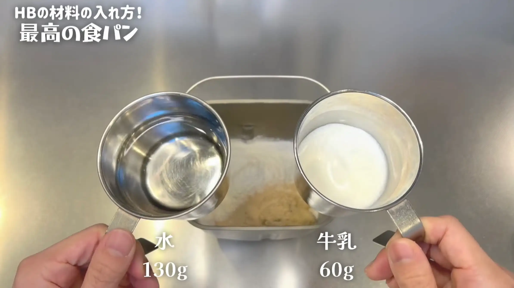
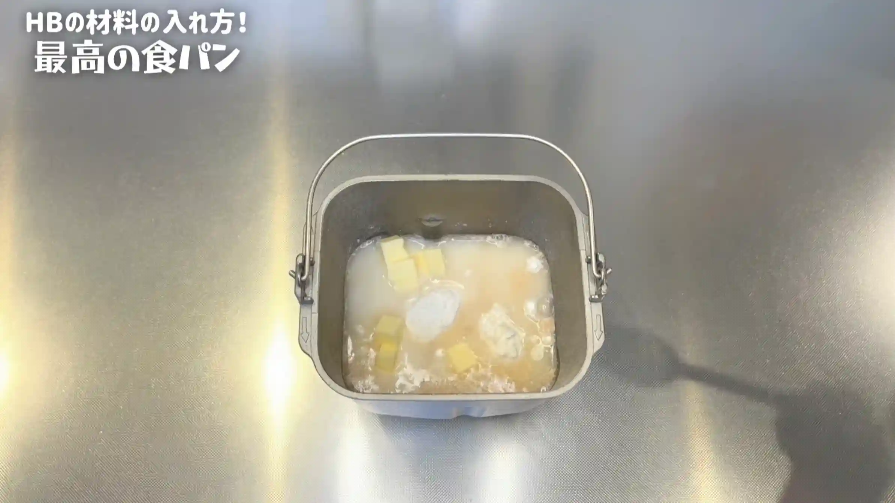
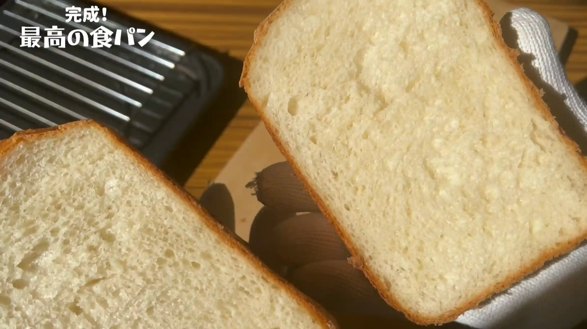

材料
※粉量を変えると自動計算されます
生地
作り方
生地
STEP 1
冷たいお水、冷たい牛乳を準備する
お水と牛乳は冷たいものを使います。ホームベーカリーは捏ねている間にモーターの熱で生地の温度が上がりやすいため、冷たい液体を使って生地の温度が上がりすぎないようにします。特に室温が高いときは、冷たい仕込み水を使うのがおすすめです。
お水と牛乳は冷たいものを使います。ホームベーカリーは捏ねている間にモーターの熱で生地の温度が上がりやすいため、冷たい液体を使って生地の温度が上がりすぎないようにします。特に室温が高いときは、冷たい仕込み水を使うのがおすすめです。

STEP 2
材料を全てケースに入れる
強力粉、砂糖、塩、バターなどの材料をホームベーカリーのケースに入れます。強力粉は「春よ恋」がおすすめです。イーストと塩は離して入れておくと、イーストが塩に直接触れた状態を避けられます。
強力粉、砂糖、塩、バターなどの材料をホームベーカリーのケースに入れます。強力粉は「春よ恋」がおすすめです。イーストと塩は離して入れておくと、イーストが塩に直接触れた状態を避けられます。

STEP 3
ホームベーカリーの「食パンコース」で焼く
今回は早焼きコースではなく、通常の「食パンコース」を使います。じっくり時間をかけて発酵・焼成することで、小麦の風味を引き出しながら、しっとりとした食パンに仕上げます。焼き上がったら、ケースから取り出して冷まします。
今回は早焼きコースではなく、通常の「食パンコース」を使います。じっくり時間をかけて発酵・焼成することで、小麦の風味を引き出しながら、しっとりとした食パンに仕上げます。焼き上がったら、ケースから取り出して冷まします。

動画でチェック
おいしく作るためのワンポイントコラム
「ホームベーカリーで焼くパンを、もう少し美味しくできないかな？」とお悩みの方は、ぜひこのレシピを試してみてください！Nationalのホームベーカリーでパンを焼き続けること十数年。私がたどり着いた最高の配合で、まるでパン屋さん級の絶品食パンが焼き上がります！スーパーで手軽に買える材料で作れるのも嬉しいポイント。今回はHBで『最高の食パン』を焼く「3つのコツ」をご紹介します。
① 美味しさを激変させる『春よ恋』
HB食パンの味を一番手軽にグレードアップさせるポイントは、強力粉選びです！私のおすすめはスーパーでも手に入る国産小麦『春よ恋』。一般的に『春よ恋』などの国産小麦は、外国産小麦に比べて「膨らみがやや控えめになりやすい」と言われることもありますが、このレシピなら相性抜群！高加水としっかりした捏ねのおかげで、おうちのHBでも膨らみ不足を感じさせず、背が高くふっくらとした美しい食パンに焼き上がります（※膨らみ方はお使いのHBの機種やパワーによっても多少変化します）。しっとり感が格段にアップし、小麦の旨みが引き出された皮まで抜群に美味しいお店レベルの味になりますよ！ ケースに材料を入れるときは細かい順番を気にせずどんどん入れてOKですが、イーストとお塩は離して配置するのがおすすめ。HBが動き出せば最終的に混ざり合いますが、塩が近くにあるとイーストの働きが鈍りやすいため、離してセットするとより確実で丁寧です。
② 「高加水×たっぷりバター」
このレシピの最大の特徴は、試行錯誤の末にたどり着いた多めの水分量とたっぷり配合したバターです。これを手捏ねでやろうとすると生地がベタベタになって本当に大変なのですが、HBなら何の心配もせず完璧に捏ね上げてくれます。高加水ならではの抜群の保水力とリッチなバターのおかげで、焼き上がりは内側が光り輝くほどしっとりツヤツヤに仕上がります。
③ 過発酵を防ぐ「冷水仕込み」
HBならではの失敗を防ぐ一番重要なコツが、仕込みに冷たいお水や牛乳を使うことです。HBは捏ねている間にモーター熱で生地温度が上がりやすく、特にあたたかい室温だとイーストが進みすぎて「過発酵（＝パサつきの原因）」を起こしがちに。冷水を使うことでその熱を抑えることができます。また、約4時間かける通常の食パンコースでじっくり焼き上げることもポイント。早焼きコースではなく、通常の食パンコースでゆっくり発酵させることで、小麦の旨みをしっかり引き出すことができます。
同じような材料や配合でも、ちょっとした違いで「こんなに変わるんだ！」と感動していただけること間違いなし！焼きたてはもちろん絶品ですが、冷めてもパサつかず、冷凍保存しても美味しさが長続きします。YouTubeのコメント欄でも大変ご好評いただいている自慢のレシピですので、ぜひおうちのHBで『最高の食パン』を味わってみてください！
① 美味しさを激変させる『春よ恋』
HB食パンの味を一番手軽にグレードアップさせるポイントは、強力粉選びです！私のおすすめはスーパーでも手に入る国産小麦『春よ恋』。一般的に『春よ恋』などの国産小麦は、外国産小麦に比べて「膨らみがやや控えめになりやすい」と言われることもありますが、このレシピなら相性抜群！高加水としっかりした捏ねのおかげで、おうちのHBでも膨らみ不足を感じさせず、背が高くふっくらとした美しい食パンに焼き上がります（※膨らみ方はお使いのHBの機種やパワーによっても多少変化します）。しっとり感が格段にアップし、小麦の旨みが引き出された皮まで抜群に美味しいお店レベルの味になりますよ！ ケースに材料を入れるときは細かい順番を気にせずどんどん入れてOKですが、イーストとお塩は離して配置するのがおすすめ。HBが動き出せば最終的に混ざり合いますが、塩が近くにあるとイーストの働きが鈍りやすいため、離してセットするとより確実で丁寧です。
② 「高加水×たっぷりバター」
このレシピの最大の特徴は、試行錯誤の末にたどり着いた多めの水分量とたっぷり配合したバターです。これを手捏ねでやろうとすると生地がベタベタになって本当に大変なのですが、HBなら何の心配もせず完璧に捏ね上げてくれます。高加水ならではの抜群の保水力とリッチなバターのおかげで、焼き上がりは内側が光り輝くほどしっとりツヤツヤに仕上がります。
③ 過発酵を防ぐ「冷水仕込み」
HBならではの失敗を防ぐ一番重要なコツが、仕込みに冷たいお水や牛乳を使うことです。HBは捏ねている間にモーター熱で生地温度が上がりやすく、特にあたたかい室温だとイーストが進みすぎて「過発酵（＝パサつきの原因）」を起こしがちに。冷水を使うことでその熱を抑えることができます。また、約4時間かける通常の食パンコースでじっくり焼き上げることもポイント。早焼きコースではなく、通常の食パンコースでゆっくり発酵させることで、小麦の旨みをしっかり引き出すことができます。
同じような材料や配合でも、ちょっとした違いで「こんなに変わるんだ！」と感動していただけること間違いなし！焼きたてはもちろん絶品ですが、冷めてもパサつかず、冷凍保存しても美味しさが長続きします。YouTubeのコメント欄でも大変ご好評いただいている自慢のレシピですので、ぜひおうちのHBで『最高の食パン』を味わってみてください！


HB歴10年以上の試行錯誤でたどり着いた『最高の食パン』レシピ！身近な材料で皮まで美味しいツヤツヤ＆しっとり食感に仕上げます。コラムではHB食パンを劇的に美味しくする「美味しさを激変させる『春よ恋』」「高加水×リッチバター」「過発酵を防ぐ冷水仕込み」の3つのコツを詳しく解説！